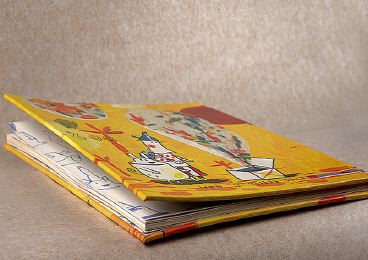
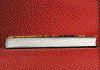
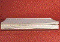
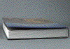
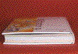
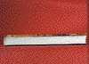

BUCHDECKENWÖLBUNG
|
Buchdeckenwölbung tritt in der Regel erst
beim Gebrauch der Bücher in beheizten
Räumen auf. In der Heizperiode fällt die
relative Feuchte in nicht klimatisierten
Räumen auf Werte von unter 20 Prozent ab. Die
Bücher geben Feuchtigkeit an die trockene
Raumluft ab. Durch die Veränderung des
Feuchtigkeitsgehaltes wird eine einseitige
Wölbungstendenz, ähnlich wie bei einem
Bi-Metall, hervorgerufen und es kommt zu einem
Wölben der Buchdecke nach außen (Abb.
1).
|

|
Abb. 1: Wölbung an Buchdecken.
|
|
|
|
Mögliche Ursachen:
|
|

|
|
Abb. 2: Planlage von Buchdecken.
|
|
|
|

|
|
Abb. 3: Tellern des Buchblocks.
|
|
|
|
|
|
Abb. 4: Tellern des Buchblocks (Ausschnitt).
|
|
|
|

|
|
Abb. 5: Buchdecke schnabelt nach
außen.
|
|
|
|

|
|
Abb. 6: Konvexe Verformung nach innen zum
Buchblock.
|
|
|
|
|
|
Abb. 7: Wölbung der Buchdecke vor
Reklimatisierung.
|
|
|
|

|
|
Abb. 8: Rückstellung der Planlage nach
Reklimatisierung.
|
|
|
|

|
|
|
|
|
|
|
Bei der Buchfertigung:
Die Druckpapiere für den Buchblock werden
üblicherweise mit einer relativen Feuchte von 50 %
angeliefert. Durch den Bogenoffsetdruck ändert sich an
diesem Feuchtegehalt der Druckbogen nur wenig. Die Pappen
für die Buchdeckenherstellung weisen in der Regel eine
relative Feuchtigkeit von 60 % bis 70 % auf. Nach der
Buchherstellung stellt sich in Büchern ein
Gleichgewicht der relativen Feuchte von etwa 55 % bis 60 %
ein. In diesem Zustand liegen die Buchdecken absolut plan
(Abb. 2). Die Bücher werden in Kartons verpackt oder
folienverschweißt zum Verlag versandt.
Solange sie gepresst im Stapel liegen oder in ihrer
Folienverpackung verbleiben, findet nahezu kein
Feuchtigkeitsaustausch mit der Umgebung statt. Gelangen die
Bücher dann aber in einen beheizten Raum und liegen
lose und unverpackt aus, dann beginnt die Austrocknung des
Buchblockes und der Buchdecke. Die Austrocknung des
Buchblockes beginnt von den Blattkanten der Buchseiten her
und kann zum sogenannten „Tellern“ des Buchblocks
führen (Abb. 3 und Abb. 4). Die Ursache liegt darin,
dass sich die Randbereiche der Blätter durch die
Austrocknung zusammenziehen. Dadurch wölbt sich der
Rand nach oben oder unten.
Durch diese Verformung des Buchblockes wird auch die
Buchdecke angehoben.
Bei der Buchdecke:
Sie wird von außen mit den unterschiedlichsten
Materialien kaschiert wie: Leinen, Papier und Folien. Das
Vorsatzpapier besteht in der Regel aus Papier. Wird der
Einband in trockener Umgebungsluft gelagert, kommt es zu
einer Wölbung der Buchdecke. In den meisten Fällen
„schnabelt` die Decke nach außen (Abb. 5). Dies
ist vor allem bei leinenbezogenen Decken zu beobachten. Die
dabei auftretenden Kräfte sind derart groß, dass
das auf der Rückseite aufkaschierte Vorsatzpapier dem
nichts entgegenzusetzen hat.
Es gibt jedoch auch Beispiele mit einer optisch
günstigeren konvexen Verformung nach innen zum
Buchblock (Abb. 6). Dies ist häufig bei
folienkaschierten Decken zu beobachten, bei denen durch die
völlige Sperre der Außenseite gegen
Feuchtigkeitseinfluss keine Austrocknung möglich ist.
Der Angriff erfolgt hier nur von der mit Vorsatzpapier
kaschierten Rückseite. Ein weiterer Einflussfaktor der
Wölbung liegt in der Beschaffenheit der Pappen. Bei den
Pappen für die Buchdecken ist herstellungsbedingt eine
gewisse Zweiseitigkeit nicht zu vermeiden, d. h.: bei jeder
Veränderung des Feuchtigkeitsgehaltes (Befeuchtung oder
Austrocknung) wird eine einseitige Wölbungstendenz,
ähnlich wie bei einem Bi-Metall, hervorgerufen.
|
Mögliche Abhilfen:
|
|
Der Buchbinder kann die naturgemäße
Zweiseitigkeit der Deckenpappen nutzen und nach einem
Vortest die Pappenseiten der Decke entsprechend zuordnen, so
dass die Wölbung der Decke sich optisch günstiger
nach innen richtet.
Die Verwölbung der Buchdecken ist ein reversibler
Vorgang, und daher geht die Wölbungstendenz
beträchtlich zurück, wenn wieder „normale"
Raumklimaverhältnisse eintreten.
Weiterhin ist bekannt, dass nach mehreren Klimazyklen eine
zusehends geringere Reaktion der Pappen in Form von
Deckenverwölbungen auftritt.
|
Beispiel(e):
|
|
Der FOGRA wurden eingeschweißte Deckenbände
übersandt, bei denen nach der Auslieferung eine
Nichtplanlage der Decken reklamiert wurde.
Bei der Entnahme der noch eingeschweißten Bücher
aus der Versandverpackung in der FOGRA zeigte sich lediglich
eine minimale Tendenz zum „Schnabeln“
(Nichtplanlage) der Buchdecken. Zur Beurteilung der
Klimaverhältnisse in den beanstandeten Büchern
erfolgte eine Messung des relativen Feuchtegehalts der
Buchblöcke. Die Ergebnisse der Feuchtemessungen wiesen
bei den Büchern auf eine für im Bogenoffsetdruck
„normale“ relative Feuchte von ca. 45 % hin.
Die eingeschweißten, plan liegenden Bände wurden
anschließend für 72 Stunden bei einer
Raumluftfeuchte von 20 % und einer Temperatur von
23 °C gelagert. Mit Andauern der Lagerung in
trockener Raumluft veränderte sich die Planlage zu
einer Wölbung der Buchdecken nach außen (Abb.
7).
Umgekehrt wurden die nicht mehr plan liegenden Bücher
anschließend wiederum für 72 Stunden bei einem
Raumklima von 23 °C und 55 % rel. Luftfeuchte gelagert.
Durch die Wiederbefeuchtung trat bei den Büchern eine
deutliche Rückstellung der Planlage der Decken ein
(Abb. 8).
|
Allgemeine Hinweise:
|
|
Für den Reklamationsfall:
Reklamierte Muster sicherstellen.
Raumklima prüfen.
Rel. Feuchte im Buchblock und in den Decken
kontrollieren.
Ergänzende Literatur:
STADLER, P.:
Einfluss von Produktionsparametern und Material auf das
Planlageverhalten von Buchdecken bei variablem
Raumklima.
München: FOGRA, 1989 (4.034). - Forschungsbericht
|
|
|
|
|
|
|
Kontakt:
stadler@fogra.org
|
Buc-sta-200112
|